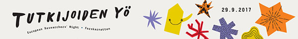
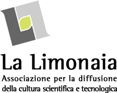
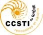
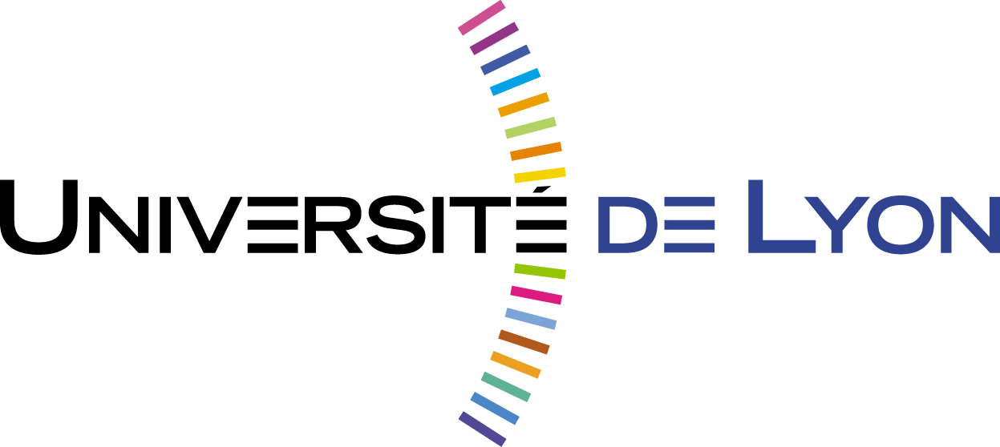
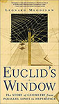

Outreach Mathematics & Sciences
|
We work with Tuomo Äkkinen and Ville Kivioja (University of Jyväskylä) on the Mathematical Education project Signs of Mathematics. |
|


Past activities
 Jyväskylä Researchers' Night in the framework of European Resarchers' Night Together with Ville Kivioja and Terhi Moisala, we presented some features of
the Galton Board (see a video, 2017). In 2018, we innaugurated the first part of a Maths&Sciences exhibition in Jyväskylä (Signs of Mathematics). |
Effetto Farfalla (in english: Butterfly Effect) Exhibition and talk about Chaos Theory and Dynamical Systems. |
 |
Un Promenade en Mecanique Quantique (in english: A walk tour around Quantum Mechanics) Together with (the amazing) Audrey Savre, we lead a Outreach project around Quantum Mecanics.   |
Matemateca University of São Paulo As an undergraduate student, Augusto Gerolin (AG) took part as a tutor in the great Matemateca. |
A Janela de Euclides - Leonard Mlodinow (book, original title: Euclid's Window) AG was the proofreading of the portuguese translation of the beautiful and delighting book Euclid's Windows: The Story of Geometry from Parallel Lines to Hyperspace,
written by Leonard Mlodinow and published by Geração Editorial. |
 |